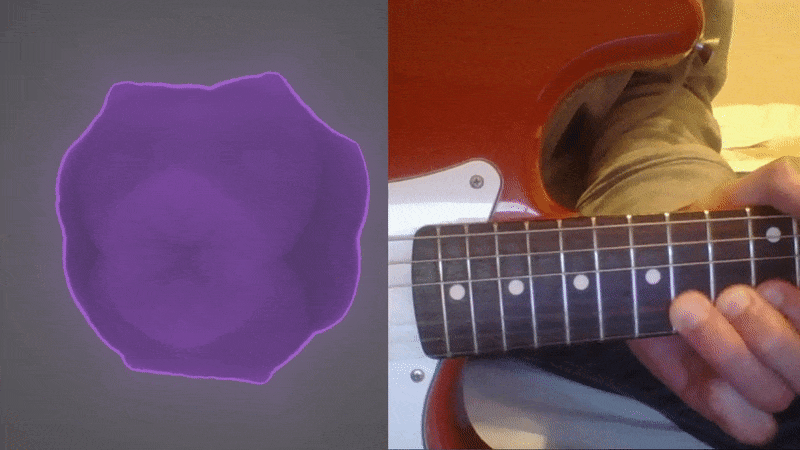

Introduction
This is my Honours project for my Games Development degree. It visualizes live audio input using 3D fractals for the visuals. I undertook this project because I wanted to explore a possibility of a performance tool for live music and at the same time work on a graphically focused project.
How it works
The application has three main logical components: audio handler, fractal renderer, and main controller. The main controller controls the flow of the application. The application works somewhat similarly to a game as it is focused on rendering frames and performing all its calculations once per frame. The audio handler deals with audio input and analysis. It returns various properties of the input audio. The fractal renderer receives the audio properties and uses them as seeds for fractal rendering. The rendering is done entirely in the fractal shader by using ray-marching.
Results
The application renders a fractal that reacts to music being played. The application struggles with chords and multiple notes at the same time however. I believe this is due to my approach in analyzing audio. When taking advantage of the strengths of the application, a suitably impressive output can be achieved.
